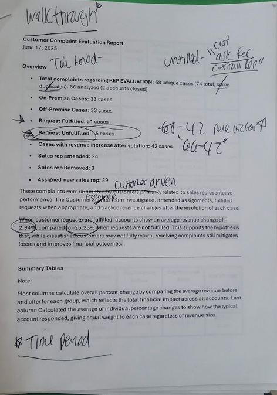

A research-driven deep dive into customer complaints, satisfaction patterns, and at-risk account identification — turning a year of unstructured feedback into an actionable CX strategy.
Alongside the dashboard work, a parallel research track ran throughout the internship focused on understanding the customer experience from the outside in. Where the dashboards surfaced operational data, this work surfaced the human side — what customers were frustrated about, what patterns were hiding in the complaint log, and what a proactive CX strategy could look like going forward.
Three components: a customer complaint analysis, a Qualtrics survey initiative, and a customer assessment framework built for long-term use. Collaborators included the CX Specialist, Customer Service Manager, Operations department, and key account representatives.
Complaints were coming in — but there was no systematic way to learn from them. Cases were tracked individually with no aggregate analysis, no pattern recognition, and no clear picture of which resolution approaches actually retained revenue. There was also no proactive mechanism to hear from customers before problems escalated.
Goal: Turn reactive complaint-handling into a research-backed CX strategy with clear findings, actionable recommendations, and tools the team could use going forward.
68 complaint cases coded, categorized, and analyzed for revenue impact before and after resolution
Qualtrics survey developed with the CX team and Qualtrics professionals to capture direct customer feedback
A structured scoring tool built to help the organization proactively identify and intervene with at-risk accounts
Dataset: 68 unique complaint cases (66 active accounts, 2 closed) submitted over the year — all related to sales representative performance. Cases were evenly split: 33 on-premise, 33 off-premise. 51 requests fulfilled, 15 unfulfilled.

Complaint evaluation report — 68 cases analyzed with handwritten annotations from stakeholder walkthrough sessions
In collaboration with the CX Specialist and Qualtrics professionals, a qualitative online survey was designed to create a direct feedback channel covering delivery satisfaction, sales rep experience, and overall service quality.
Contributions included:
The survey reached active data collection stage. Full analysis and follow-up were scoped for continuation by the team post-internship.
A formal customer assessment framework was drafted as a tool the CS and Operations teams could use going forward to identify at-risk accounts before they churned — shifting the organization from reactive to proactive account management.
How it works: Each account is scored across 9 weighted categories on a 0–10 scale. The weighted average produces a final score that maps to one of five audit levels.
| Category | Weight |
|---|---|
| Invoice Discrepancies (90 days) | 20% |
| Customer Fill Rate (90 days) | 20% |
| On-Time Delivery | 15% |
| Warehouse Fill Rate (90 days) | 10% |
| Invoice Exception: DNO (YTD) | 10% |
| Resolution Time (business days) | 10% |
| Verbal / Physical Confrontation | 5% |
| Consistent Driver | 5% |
| Multiples Business (product loyalty) | 5% |
Audit levels range from:
The framework was handed off to department leaders for implementation — giving ABG a replicable, data-driven system for proactive account management.
✦ Complaint analysis delivered with findings and recommendations to CS leadership
✦ Qualtrics survey launched and in active data collection by end of internship
✦ Customer assessment framework drafted and handed off to CS and Operations for future implementation
✦ Deliverables collectively contributed to a projected 18% improvement in resolution efficiency
Good UX research isn't just about usability — it's about asking the right question of the right data. The complaint analysis started as a list and became a revenue story. The assessment framework started as a checklist and became a change management tool. The goal throughout wasn't just to produce slides — it was to leave behind documents the team could actually pick up and use.